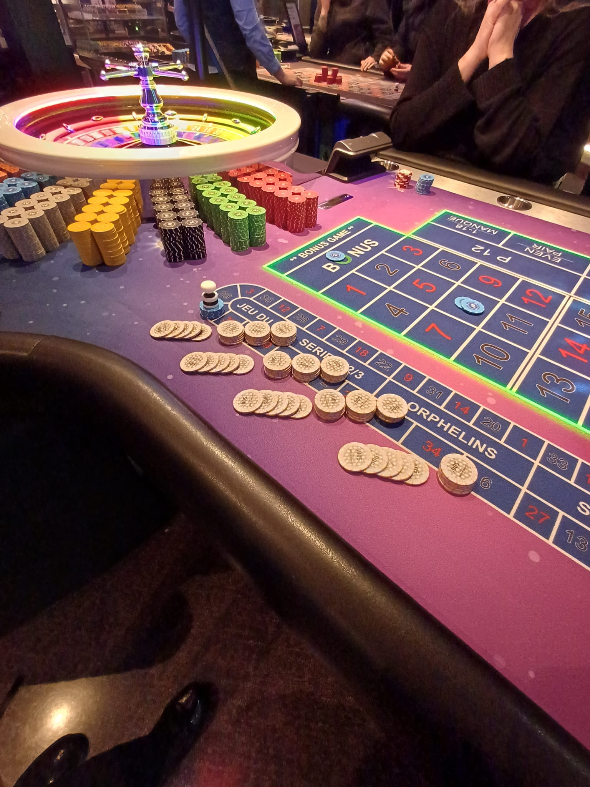
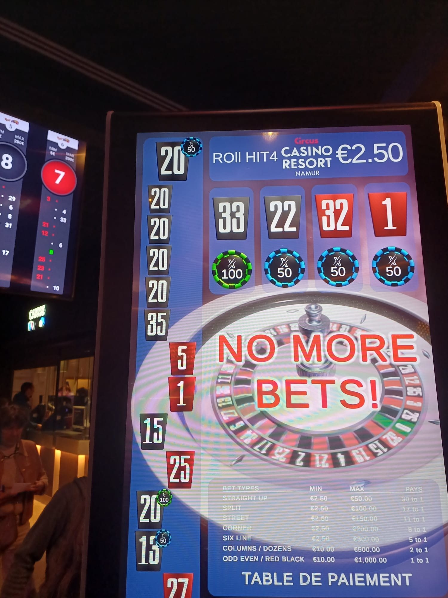

Actualité Casino
Un numéro cinq fois de suite à la roulette : la nuit incroyable d’Édouard au Circus Casino Resort Namur
Une scène aussi rare que spectaculaire a marqué la nuit de dimanche à lundi au Circus Casino Resort Namur.
Les casinos sont faits d’instants éphémères. La plupart passent inaperçus. D’autres, en revanche, deviennent des souvenirs que l’on raconte encore longtemps après. Ce qui s’est produit cette nuit-là au Circus Casino Resort Namur appartient clairement à cette seconde catégorie.
Édouard, venu passer une soirée détendue en compagnie de son épouse, ne se doutait pas qu’il allait vivre l’un de ces moments exceptionnels qui font vibrer toute une salle de jeux.
Pendant que son épouse profitait des machines à sous, il s’était installé à la roulette n°4, une Lightning Roulette particulièrement animée ce soir-là.

La série exceptionnelle s’est produite à la roulette n°4, une Lightning Roulette du Circus Casino Resort Namur.
Une série qui défie les probabilités
La bille tourne… ralentit… et finit sa course sur un numéro précis.
Rien d’inhabituel jusque-là.
Quelques instants plus tard, la scène se répète. Le même numéro apparaît une deuxième fois. À la roulette, ce type de répétition n’a rien d’extraordinaire. Les joueurs sourient, mais personne ne s’en étonne vraiment.
Puis vient une troisième occurrence.
Les regards commencent à se croiser. L’atmosphère évolue doucement. Certains s’approchent, intrigués. Édouard, lui, commence sans doute à sentir que quelque chose d’inhabituel est en train de se produire.
Lorsque la bille tombe une quatrième fois consécutive sur le même numéro, l’ambiance change radicalement. Cette fois, il ne s’agit plus d’un simple coup de chance. Les conversations ralentissent, les regards se fixent sur la roue.
À ce stade, une certitude s’impose : la soirée bascule dans l’exceptionnel. Et pour Édouard, cela signifie déjà un gain garanti de 5 000 € grâce au bonus maison.
Le moment suspendu
La bille repart pour un nouveau tour.
Le bruit ambiant diminue. Les discussions s’effacent. Toute l’attention converge vers la roulette.
Elle tourne… ralentit… rebondit légèrement entre les cases…
Puis s’arrête.
Le même numéro. Encore.
Cinq fois de suite.
Pendant une fraction de seconde, le temps semble suspendu. Puis l’explosion : applaudissements, cris de surprise, joueurs debout, spectateurs qui accourent pour comprendre ce qui vient de se passer.
En quelques instants, la roulette n°4 devient le centre de toute l’attention du casino.
Un bonus exclusif qui change tout

Grâce au bonus exclusif “Five In A Row”, la quintuple répétition a rapporté 35 000 € supplémentaires au joueur.
Si une telle série suffit déjà à rendre une soirée inoubliable, un autre élément vient amplifier l’événement : le bonus exclusif “Five In A Row”, proposé uniquement au Circus Casino Resort Namur.
Son fonctionnement est simple mais redoutablement efficace : plus un numéro se répète, plus les gains deviennent importants.
- 2 fois de suite : une boisson offerte
- 3 fois de suite : 500 €
- 4 fois de suite : 5 000 €
- 5 fois de suite : une voiture de luxe… ou 35 000 € en cash
Grâce à cette quintuple répétition rarissime, Édouard a ainsi décroché 35 000 € supplémentaires.
Un dénouement spectaculaire pour une séquence que peu de joueurs ont la chance d’observer une seule fois dans leur vie.
Une soirée gravée dans les mémoires
Lorsque son épouse est revenue des machines à sous, l’ambiance autour de la roulette était déjà électrique.
Entre félicitations, rires et discussions animées, Édouard réalisait peu à peu l’ampleur de ce qu’il venait de vivre.
Pendant plusieurs minutes, la table a conservé cette atmosphère unique, faite d’étonnement et d’euphorie — ce mélange si particulier que seuls les grands moments de hasard peuvent créer.
Une chose est sûre : cette soirée restera gravée dans la mémoire du couple… et de tous les joueurs présents.
Informations pratiques
Le Circus Casino Resort Namur accueille ses visiteurs 7 jours sur 7, 24 heures sur 24.
Les tables de jeu sont ouvertes chaque jour entre 15h et 4h ou 5h du matin.
👉 Plus d’informations : https://www.circuscasinoresort.com